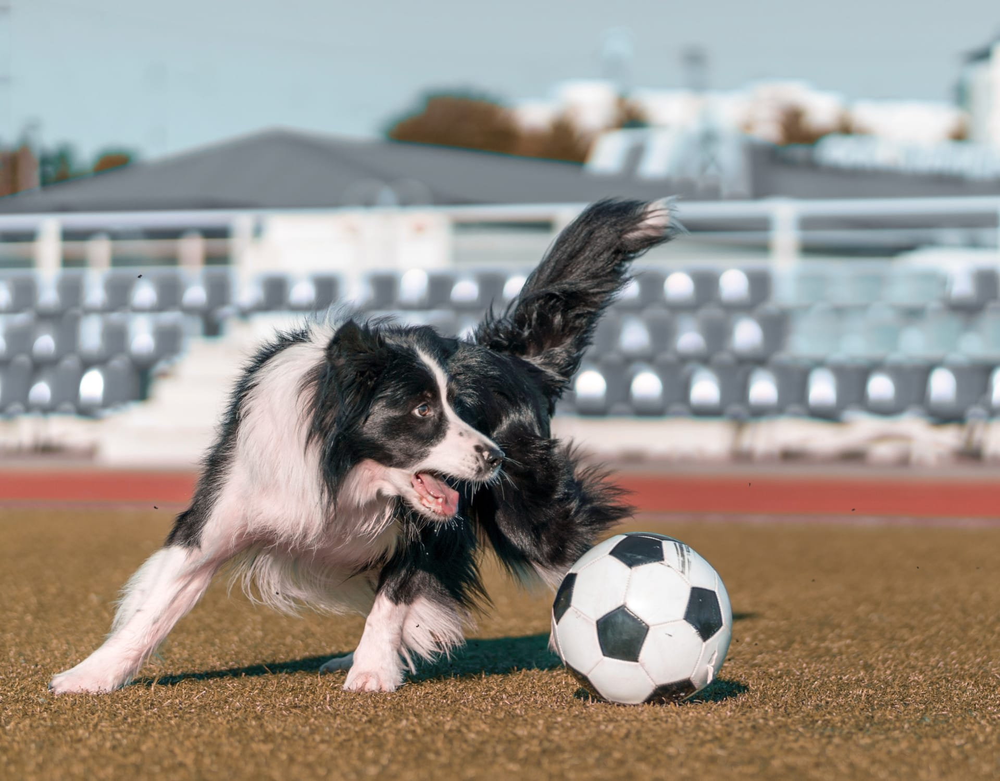

Buffhound’s Heroics
15 Saves Against Manchester City
In a performance that left fans breathless, Buffhound proved once again why it’s the heartbeat of FC Animalia’s defense. Standing tall between the posts, the dog goalkeeper delivered a stunning display as FC Animalia battled Manchester City to a hard-fought draw at The Den on Thursday night. Facing 15 shots on target, Buffhound refused to yield. From acrobatic fingertip saves that drew gasps from the crowd to fearless one-on-one stops at the edge of the box, it was a night that highlighted pure instinct, discipline, and heart. Each dive, each stretch of the paw, kept FC Animalia alive — and the fans roaring in appreciation.
Head Coach Clawson praised Buffhound’s composure under pressure: “That was an unbelievable performance. Buffhound showed what true leadership and courage look like. The entire team fed off that energy.”
The draw keeps FC Animalia firmly in contention in the league standings, with momentum building ahead of next week’s away fixture at San Siro. As the final whistle blew, Buffhound raised its paw to the stands, greeted by a chorus of howls from the home supporters — a fitting salute to a night when one keeper’s heroics mad